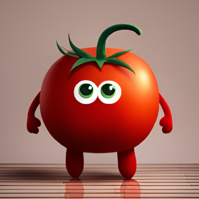

자기소개서
안녕하십니까. 한국외국어대학교에서 software&ai를 이중전공하고 있는 차주영입니다.
오늘은 저에 대해 간단히 소개해 보도록 하겠습니다.^^
목차
간단한 소개
- 차주영
- 학번: 비공개
- 전공: 비공개
- 이중전공: software&ai
- 증명사진

나의 취미, 특기, 이력 등
내가 좋아하는 것은?
- 여행
- 커피 & 디저트 맛집 탐방
- 토마토
- 이메일 및 깃허브 계정이 verynicetomato일 정도로 토마토를 굉장히 좋아함
- 봄, 여름, 가을: 그 중에서 여름을 가장 좋아함
- 음악 감상 (Pop, 재즈, K-pop 등)
- 내가 가장 좋아하는 가수: Post Malon
- 드라마 및 영화 시청: 영화 중에 인터스텔라를 가장 좋아함
내가 싫어하는 것은?
- 겨울
- 1교시 수업
- 채소 (특히 고수, 가지, 피망, 양파, 호박, 버섯 등)
- 느린 인터넷
- 벌레 (특히 바퀴벌레와 거미)
- 휴대폰 배터리 부족...
- 공포 영화
|
월 |
화 |
수 |
목 |
금 |
| 1 |
|
|
|
중남미 소설 |
|
| 2 |
|
|
|
|
| 3 |
|
중급 스페인어 문법 |
|
|
|
| 4 |
고급 파이썬 프로그래밍 |
|
웹 프로그래밍 |
운영체제 |
| 5 |
|
체육(스킨스쿠버) |
| 6 |
|
| 7 |
알고리즘 |
|
|
종합설계 |
|
| 8 |
|
|
|
| 9 |
|
|
|